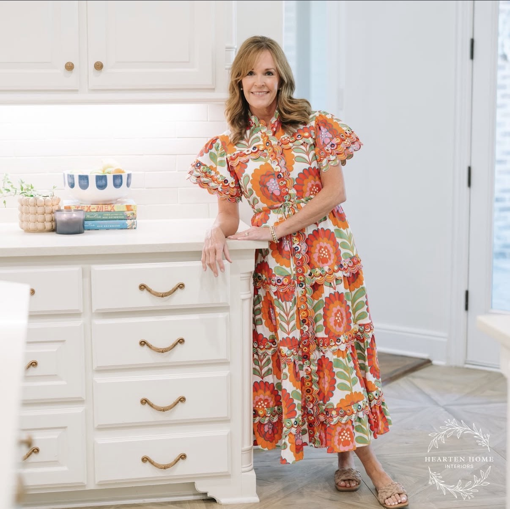

Three decades of heartfelt design, hospitality, and home creation.

Hi, I'm Bonnie! After 30 years of helping friends and family design their spaces, I decided to step out and start my business officially. I have had a love for design and hospitality since I was a little girl.
I was once told that I "changed the atmosphere" in a client's home, and that feeling is one of the best in the world. My desire is that you love your home more — not only because it is more beautiful, but because it is a reflection of who you are and what you love.
From the first dream board to the very last final detail, let me help set your table and create well-loved places to gather with your loved ones.
"To make someone feel happier and more positive about a situation... to make cheerful or encourage. That is what it means to Hearten."